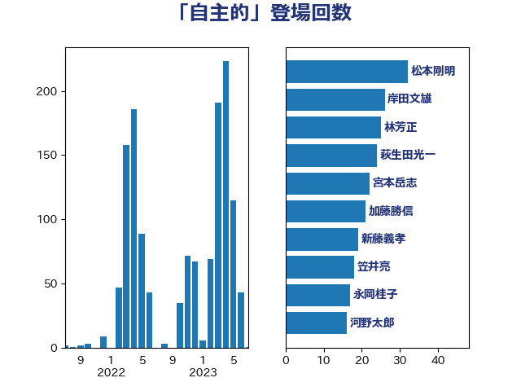

単語「自主的」

| 松本剛明 | 自由民主党 | 32 回 |
| 岸田文雄 | 自由民主党 | 26 回 |
| 林芳正 | 自由民主党 | 25 回 |
| 萩生田光一 | 自由民主党 | 24 回 |
| 宮本岳志 | 日本共産党 | 22 回 |
| 加藤勝信 | 自由民主党 | 21 回 |
| 新藤義孝 | 自由民主党 | 19 回 |
| 笠井亮 | 日本共産党 | 18 回 |
| 永岡桂子 | 自由民主党 | 17 回 |
| 河野太郎 | 自由民主党 | 16 回 |
| 福島伸享 | 無所属 | 15 回 |
| 岡田直樹 | 自由民主党 | 15 回 |
| 若宮健嗣 | 自由民主党 | 13 回 |
| 伊佐進一 | 公明党 | 13 回 |
| 西村康稔 | 自由民主党 | 12 回 |
| 小野泰輔 | 日本維新の会 | 12 回 |
| 神田憲次 | 自由民主党 | 11 回 |
| 山井和則 | 立憲民主党 | 11 回 |
| 金子恭之 | 自由民主党 | 10 回 |
| 西銘恒三郎 | 自由民主党 | 10 回 |
| 吉良よし子 | 日本共産党 | 10 回 |
| 中谷真一 | 自由民主党 | 9 回 |
| 鈴木俊一 | 自由民主党 | 8 回 |
| 斉藤鉄夫 | 公明党 | 8 回 |
| 山田俊男 | 自由民主党 | 8 回 |
| 尾身朝子 | 自由民主党 | 8 回 |
| 小倉將信 | 自由民主党 | 8 回 |
| 北側一雄 | 公明党 | 8 回 |
| 伊藤岳 | 日本共産党 | 8 回 |
| 馬場伸幸 | 日本維新の会 | 7 回 |
| 鈴木義弘 | 国民民主党 | 7 回 |
| 野田聖子 | 自由民主党 | 7 回 |
| 道下大樹 | 立憲民主党 | 7 回 |
| 西村明宏 | 自由民主党 | 7 回 |
| 片山大介 | 日本維新の会 | 7 回 |
| 後藤茂之 | 自由民主党 | 7 回 |
| 北神圭朗 | 無所属 | 7 回 |
| 井上哲士 | 日本共産党 | 7 回 |
| 中野洋昌 | 公明党 | 7 回 |
| 芳賀道也 | 国民民主党 | 6 回 |
| 篠原孝 | 立憲民主党 | 6 回 |
| 田村貴昭 | 日本共産党 | 6 回 |
| 末松信介 | 自由民主党 | 6 回 |
| 堀場幸子 | 日本維新の会 | 6 回 |
| 吉川元 | 立憲民主党 | 6 回 |
| ながえ孝子 | 無所属 | 6 回 |
| 細田健一 | 自由民主党 | 5 回 |
| 紙智子 | 日本共産党 | 5 回 |
| 稲富修二 | 立憲民主党 | 5 回 |
| 玉木雄一郎 | 国民民主党 | 5 回 |
| 牧義夫 | 立憲民主党 | 5 回 |
| 川田龍平 | 立憲民主党 | 5 回 |
| 岩渕友 | 日本共産党 | 5 回 |
| 山田勝彦 | 立憲民主党 | 5 回 |
| 小林茂樹 | 自由民主党 | 5 回 |
| 伊波洋一 | 無所属 | 5 回 |
| 三木圭恵 | 日本維新の会 | 5 回 |
| 齋藤健 | 自由民主党 | 4 回 |
| 階猛 | 立憲民主党 | 4 回 |
| 礒崎哲史 | 国民民主党 | 4 回 |
| 田畑裕明 | 自由民主党 | 4 回 |
| 田中健 | 国民民主党 | 4 回 |
| 清水貴之 | 日本維新の会 | 4 回 |
| 沢田良 | 日本維新の会 | 4 回 |
| 池畑浩太朗 | 日本維新の会 | 4 回 |
| 柚木道義 | 立憲民主党 | 4 回 |
| 本村伸子 | 日本共産党 | 4 回 |
| 木原誠二 | 自由民主党 | 4 回 |
| 小熊慎司 | 立憲民主党 | 4 回 |
| 天畠大輔 | れいわ新選組 | 4 回 |
| 國重徹 | 公明党 | 4 回 |
| 中司宏 | 日本維新の会 | 4 回 |
| 須藤元気 | 無所属 | 3 回 |
| 長友慎治 | 国民民主党 | 3 回 |
| 鈴木英敬 | 自由民主党 | 3 回 |
| 足立康史 | 日本維新の会 | 3 回 |
| 西岡秀子 | 国民民主党 | 3 回 |
| 舩後靖彦 | れいわ新選組 | 3 回 |
| 羽田次郎 | 立憲民主党 | 3 回 |
| 田村まみ | 国民民主党 | 3 回 |
| 漆間譲司 | 日本維新の会 | 3 回 |
| 渡辺周 | 立憲民主党 | 3 回 |
| 浜田聡 | NHK党 | 3 回 |
| 浅野哲 | 国民民主党 | 3 回 |
| 水野素子 | 立憲民主党 | 3 回 |
| 森屋隆 | 立憲民主党 | 3 回 |
| 柳本顕 | 自由民主党 | 3 回 |
| 柳ヶ瀬裕文 | 日本維新の会 | 3 回 |
| 山添拓 | 日本共産党 | 3 回 |
| 宮本徹 | 日本共産党 | 3 回 |
| 宮崎勝 | 公明党 | 3 回 |
| 吉田統彦 | 立憲民主党 | 3 回 |
| 井出庸生 | 自由民主党 | 3 回 |
| 串田誠一 | 日本維新の会 | 3 回 |
| 中川貴元 | 自由民主党 | 3 回 |
| 青山繁晴 | 自由民主党 | 2 回 |
| 青山大人 | 立憲民主党 | 2 回 |
| 阿部弘樹 | 日本維新の会 | 2 回 |
| 阿達雅志 | 自由民主党 | 2 回 |
| 鈴木敦 | 国民民主党 | 2 回 |
| 野村哲郎 | 自由民主党 | 2 回 |
| 遠藤良太 | 日本維新の会 | 2 回 |
| 赤池誠章 | 自由民主党 | 2 回 |
| 赤嶺政賢 | 日本共産党 | 2 回 |
| 藤木眞也 | 自由民主党 | 2 回 |
| 藤丸敏 | 自由民主党 | 2 回 |
| 葉梨康弘 | 自由民主党 | 2 回 |
| 美延映夫 | 日本維新の会 | 2 回 |
| 緒方林太郎 | 無所属 | 2 回 |
| 石井章 | 日本維新の会 | 2 回 |
| 田嶋要 | 立憲民主党 | 2 回 |
| 田島麻衣子 | 立憲民主党 | 2 回 |
| 猪瀬直樹 | 日本維新の会 | 2 回 |
| 牧島かれん | 自由民主党 | 2 回 |
| 牧山ひろえ | 立憲民主党 | 2 回 |
| 湯原俊二 | 立憲民主党 | 2 回 |
| 渡辺博道 | 自由民主党 | 2 回 |
| 浮島智子 | 公明党 | 2 回 |
| 浅川義治 | 日本維新の会 | 2 回 |
| 柘植芳文 | 自由民主党 | 2 回 |
| 松沢成文 | 日本維新の会 | 2 回 |
| 東徹 | 日本維新の会 | 2 回 |
| 本田顕子 | 自由民主党 | 2 回 |
| 平木大作 | 公明党 | 2 回 |
| 岸真紀子 | 立憲民主党 | 2 回 |
| 岡本あき子 | 立憲民主党 | 2 回 |
| 山本香苗 | 公明党 | 2 回 |
| 山本太郎 | れいわ新選組 | 2 回 |
| 山崎正恭 | 公明党 | 2 回 |
| 山口壯 | 自由民主党 | 2 回 |
| 小沢雅仁 | 立憲民主党 | 2 回 |
| 寺田稔 | 自由民主党 | 2 回 |
| 安江伸夫 | 公明党 | 2 回 |
| 太田房江 | 自由民主党 | 2 回 |
| 塩田博昭 | 公明党 | 2 回 |
| 吉田宣弘 | 公明党 | 2 回 |
| 吉川ゆうみ | 自由民主党 | 2 回 |
| 古賀之士 | 立憲民主党 | 2 回 |
| 伴野豊 | 立憲民主党 | 2 回 |
| 中川康洋 | 公明党 | 2 回 |
| 中川宏昌 | 公明党 | 2 回 |
| たがや亮 | れいわ新選組 | 2 回 |
| あかま二郎 | 自由民主党 | 2 回 |
| 鰐淵洋子 | 公明党 | 1 回 |
| 鬼木誠 | 立憲民主党 | 1 回 |
| 高良鉄美 | 無所属 | 1 回 |
| 高橋光男 | 公明党 | 1 回 |
| 音喜多駿 | 日本維新の会 | 1 回 |
| 青木愛 | 立憲民主党 | 1 回 |
| 長谷川英晴 | 自由民主党 | 1 回 |
| 長妻昭 | 立憲民主党 | 1 回 |
| 鈴木貴子 | 自由民主党 | 1 回 |
| 鈴木庸介 | 立憲民主党 | 1 回 |
| 金子道仁 | 日本維新の会 | 1 回 |
| 金城泰邦 | 公明党 | 1 回 |
| 野中厚 | 自由民主党 | 1 回 |
| 輿水恵一 | 公明党 | 1 回 |
| 豊田俊郎 | 自由民主党 | 1 回 |
| 谷合正明 | 公明党 | 1 回 |
| 谷公一 | 自由民主党 | 1 回 |
| 西野太亮 | 自由民主党 | 1 回 |
| 西田昌司 | 自由民主党 | 1 回 |
| 西村智奈美 | 立憲民主党 | 1 回 |
| 藤巻健太 | 日本維新の会 | 1 回 |
| 藤原崇 | 自由民主党 | 1 回 |
| 落合貴之 | 立憲民主党 | 1 回 |
| 菅直人 | 立憲民主党 | 1 回 |
| 荒井優 | 立憲民主党 | 1 回 |
| 自見はなこ | 自由民主党 | 1 回 |
| 緑川貴士 | 立憲民主党 | 1 回 |
| 簗和生 | 自由民主党 | 1 回 |
| 竹詰仁 | 国民民主党 | 1 回 |
| 空本誠喜 | 日本維新の会 | 1 回 |
| 穂坂泰 | 自由民主党 | 1 回 |
| 秋本真利 | 無所属 | 1 回 |
| 福島みずほ | 社会民主党 | 1 回 |
| 福山哲郎 | 立憲民主党 | 1 回 |
| 石橋通宏 | 立憲民主党 | 1 回 |
| 矢倉克夫 | 公明党 | 1 回 |
| 盛山正仁 | 自由民主党 | 1 回 |
| 田村智子 | 日本共産党 | 1 回 |
| 熊谷裕人 | 立憲民主党 | 1 回 |
| 源馬謙太郎 | 立憲民主党 | 1 回 |
| 渡辺創 | 立憲民主党 | 1 回 |
| 浦野靖人 | 日本維新の会 | 1 回 |
| 浜田靖一 | 自由民主党 | 1 回 |
| 浜口誠 | 国民民主党 | 1 回 |
| 浅田均 | 日本維新の会 | 1 回 |
| 河野義博 | 公明党 | 1 回 |
| 江田憲司 | 立憲民主党 | 1 回 |
| 櫻井周 | 立憲民主党 | 1 回 |
| 森田俊和 | 立憲民主党 | 1 回 |
| 梅村聡 | 日本維新の会 | 1 回 |
| 柴田巧 | 日本維新の会 | 1 回 |
| 柴山昌彦 | 自由民主党 | 1 回 |
| 松野明美 | 日本維新の会 | 1 回 |
| 松野博一 | 自由民主党 | 1 回 |
| 村田享子 | 立憲民主党 | 1 回 |
| 杉本和巳 | 日本維新の会 | 1 回 |
| 木村英子 | れいわ新選組 | 1 回 |
| 木村次郎 | 自由民主党 | 1 回 |
| 早稲田ゆき | 立憲民主党 | 1 回 |
| 早坂敦 | 日本維新の会 | 1 回 |
| 新垣邦男 | 立憲民主党 | 1 回 |
| 斎藤アレックス | 国民民主党 | 1 回 |
| 打越さく良 | 立憲民主党 | 1 回 |
| 平山佐知子 | 無所属 | 1 回 |
| 市村浩一郎 | 日本維新の会 | 1 回 |
| 川合孝典 | 国民民主党 | 1 回 |
| 岩谷良平 | 日本維新の会 | 1 回 |
| 岡田克也 | 立憲民主党 | 1 回 |
| 岡本三成 | 公明党 | 1 回 |
| 山岡達丸 | 立憲民主党 | 1 回 |
| 山下芳生 | 日本共産党 | 1 回 |
| 小西洋之 | 立憲民主党 | 1 回 |
| 小林一大 | 自由民主党 | 1 回 |
| 室井邦彦 | 日本維新の会 | 1 回 |
| 守島正 | 日本維新の会 | 1 回 |
| 奥野総一郎 | 立憲民主党 | 1 回 |
| 大野泰正 | 自由民主党 | 1 回 |
| 大石あきこ | れいわ新選組 | 1 回 |
| 大島敦 | 立憲民主党 | 1 回 |
| 大家敏志 | 自由民主党 | 1 回 |
| 大塚耕平 | 国民民主党 | 1 回 |
| 大串正樹 | 自由民主党 | 1 回 |
| 塩崎彰久 | 自由民主党 | 1 回 |
| 坂本祐之輔 | 立憲民主党 | 1 回 |
| 国光あやの | 自由民主党 | 1 回 |
| 嘉田由紀子 | 無所属 | 1 回 |
| 和田有一朗 | 日本維新の会 | 1 回 |
| 吉田久美子 | 公明党 | 1 回 |
| 吉田はるみ | 立憲民主党 | 1 回 |
| 吉川沙織 | 立憲民主党 | 1 回 |
| 古賀篤 | 自由民主党 | 1 回 |
| 古川康 | 自由民主党 | 1 回 |
| 古屋範子 | 公明党 | 1 回 |
| 務台俊介 | 自由民主党 | 1 回 |
| 加藤竜祥 | 自由民主党 | 1 回 |
| 倉林明子 | 日本共産党 | 1 回 |
| 保岡宏武 | 自由民主党 | 1 回 |
| 佐藤英道 | 公明党 | 1 回 |
| 伊藤孝江 | 公明党 | 1 回 |
| 伊藤孝恵 | 国民民主党 | 1 回 |
| 伊東信久 | 日本維新の会 | 1 回 |
| 仁比聡平 | 日本共産党 | 1 回 |
| 仁木博文 | 無所属 | 1 回 |
| 井林辰憲 | 自由民主党 | 1 回 |
| 井坂信彦 | 立憲民主党 | 1 回 |
| 中野英幸 | 自由民主党 | 1 回 |
| 中条きよし | 日本維新の会 | 1 回 |
| 上野通子 | 自由民主党 | 1 回 |
| 上杉謙太郎 | 自由民主党 | 1 回 |
| 三宅伸吾 | 自由民主党 | 1 回 |